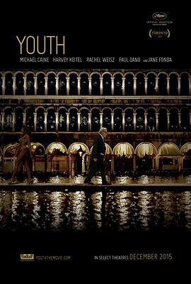

年轻气盛 / Youth
又名：回春(港) / 青春 / Il futuro / La giovinezza / In the Future / The Early Years
果然愤怒时就最想否定对方最在意的事情
作品信息
| 导演 | 保罗·索伦蒂诺 |
| 编剧 | 保罗·索伦蒂诺 |
| 主演 | 迈克尔·凯恩 / 保罗·达诺 / 蕾切尔·薇兹 / 简·方达 / 哈威·凯特尔 / 内芙·加切夫 / 埃德·斯托帕德 / 马达丽娜·珍娜 / 马克·科兹莱克 / 亚历克斯·麦奎因 / 艾米莉亚·琼斯 / 波佩·科比-特曲 / 汤姆·里皮斯基 / 克洛伊·皮里 |
| 类型 | 剧情 / 喜剧 |
| 制片国家/地区 | 意大利 / 法国 / 瑞士 / 英国 |
| 语言 | 英语 / 西班牙语 / 瑞士德语 |
| 上映日期 | 2015-05-20(戛纳电影节/意大利) |
| 片长 | 124分钟 |
| IMDb | tt3312830 |
最后一次看到是 2026-08-12T21:12:24+08:00 · 豆瓣原页